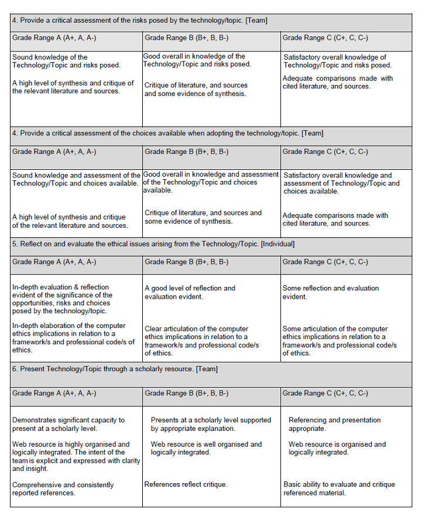
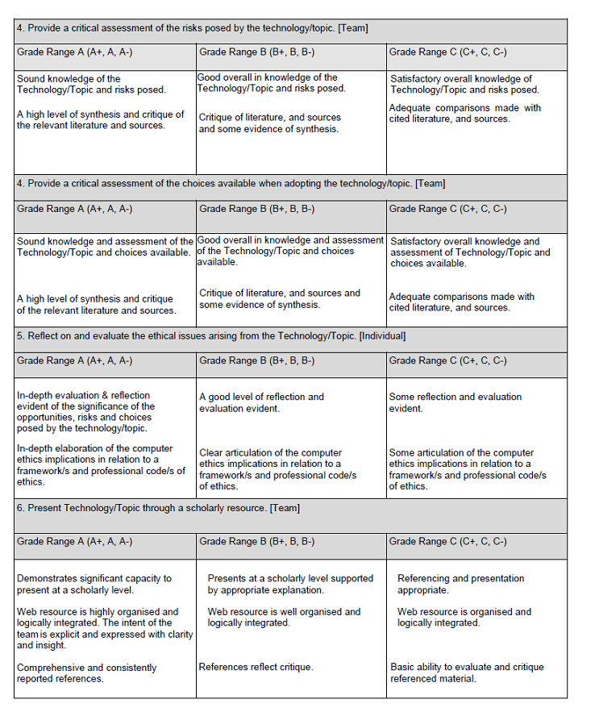
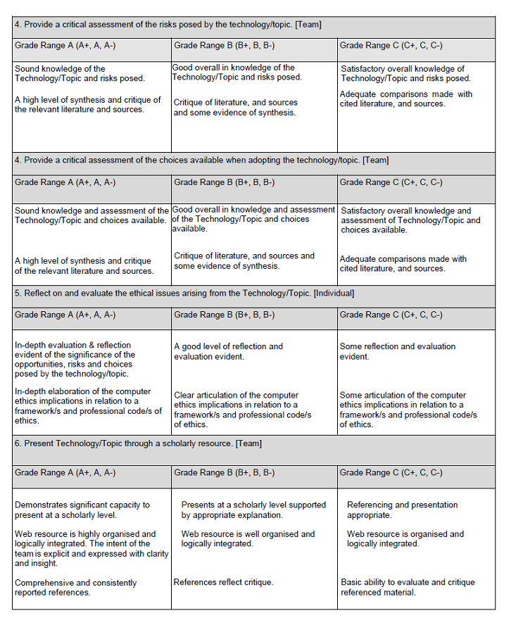

Note: this rubric will be used to guide the grading of your project

• Where the student/team exceeds the criteria in a particular grade range, an examiner may award the grade with a ‘+’ qualifier
• Where the student/team meets the criteria in a particular grade range, an examiner may award the grade as specified
• Where the student/team does not meet the criteria completely in a particular grade range but not to the extent of awarding a lower grade, an examiner may award the grade with a ‘-’ qualifier
 
